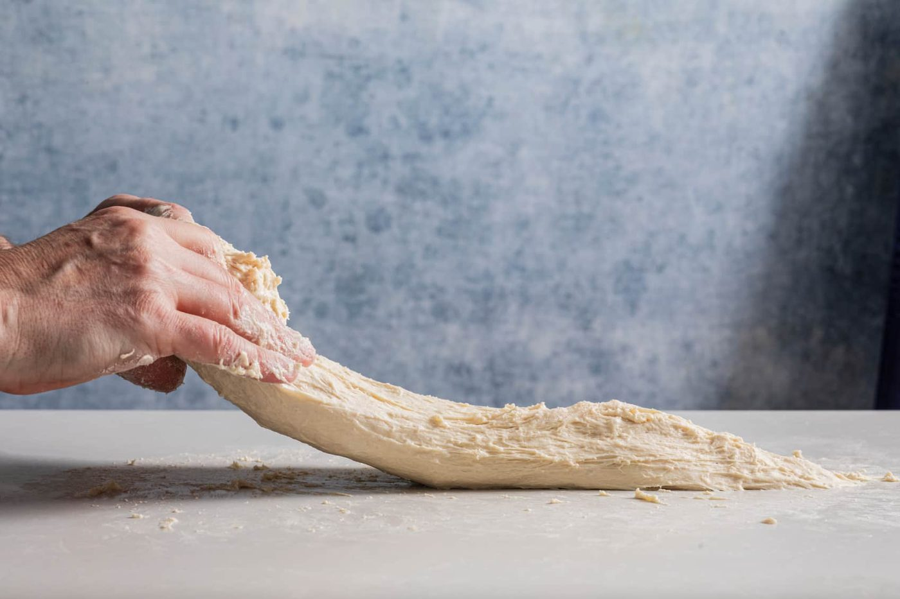
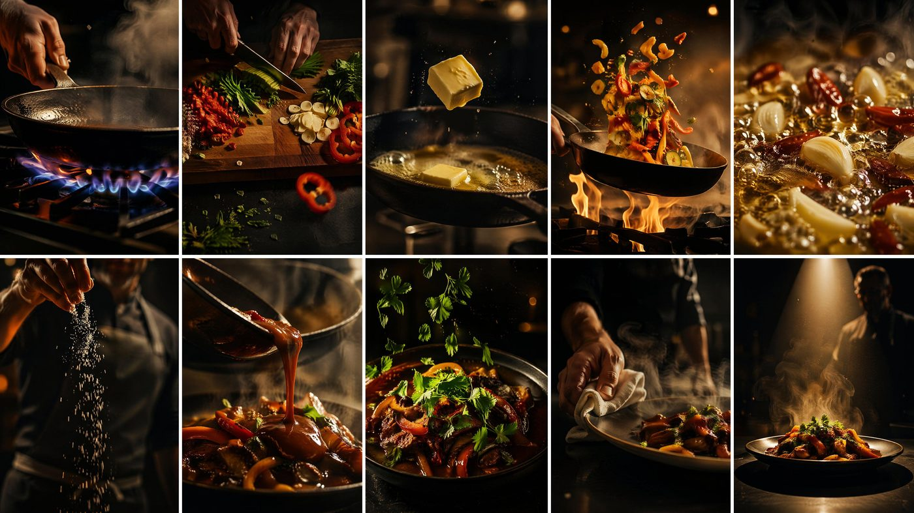
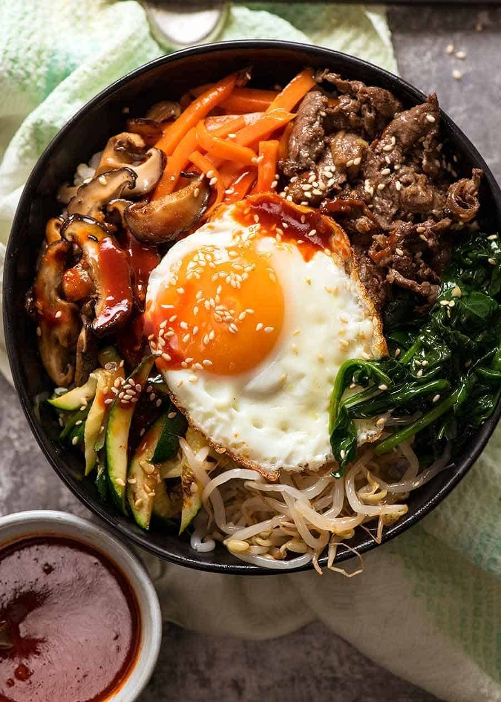
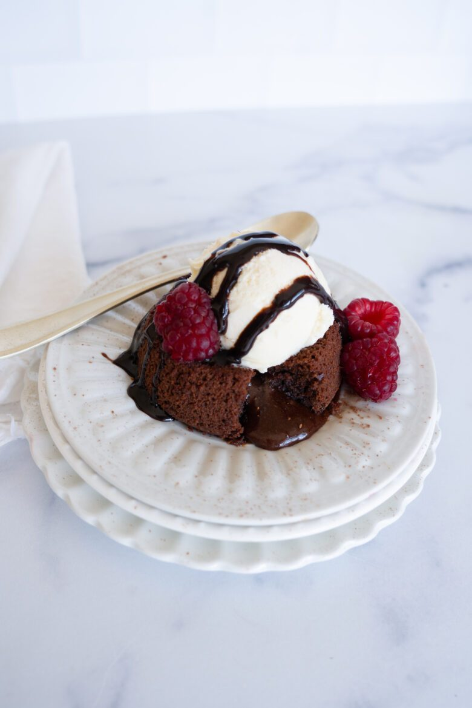

All recipes
Thirty dishes. Filter by collection, tag, or just start typing — the grid answers instantly.

All-American Apple Pie
A lattice that took patience, apples that kept their spine, and a filling that never turns to soup.

Authentic Carbonara
Guanciale, egg, pecorino, pepper. No cream. We need to talk about the no cream thing.

Baja Fish Tacos
Beer-battered fish, cabbage crunch, lime crema — invented by Japanese immigrants in Baja, perfected by everyone since.

Baked Mac and Cheese
A real béchamel, four cheeses, and a crispy top that makes the pan go quiet at the table.

Beef Bourguignon
Julia Child's Sunday stew: cheap cut, expensive taste, the whole house smells like Burgundy.

Bibimbap
A rice bowl of individually seasoned vegetables, a fried egg, and gochujang — then you wreck it all with a spoon.

Butter Chicken
Delhi's most famous export: charred yogurt-marinated chicken folded into a velvet tomato gravy.

Carnitas
Pork confit, Michoacán style — simmered in its own fat until shreddable, then crisped under the broiler until it crackles.

Chana Masala
Chickpeas that cost nothing and taste like the best curry house in town.

Chicken Katsu Curry
A panko-cutlet the size of your ambition, drowned in sweet Japanese curry. Sleep well after.

Chicken Noodle Soup
The soup your immune system asks for by name. Built from a whole bird, better than medicine.

Chicken Shawarma
The vertical spit's greatest hits, adapted for a humble sheet pan — yogurt, turmeric, seven spices, one addictive garlic sauce.

Chicken Souvlaki
Lemon-oregano skewers, tzatziki with real garlic authority, and warm pita — Greece in fifteen minutes of grilling.

Chocolate Lava Cake
Twelve minutes of baking between undercooked and overcooked. Worth every second of the anxiety.

Classic Margherita Pizza
Three ingredients, one blistered crust, zero shortcuts that matter.

Crème Brûlée
A custard so simple it has five ingredients, and a torch moment that never stops being fun.

Falafel with Tahini
Crushed chickpeas and herbs fried to shatter — the street food that convinced the world meat is optional.

French Onion Soup
Onions, patience, and a cheese lid that requires commitment and a spoon.

Mushroom Risotto
Twenty minutes of stirring buys you the creamiest rice in the Western canon.

No-Knead Sourdough
Flour, water, salt, time. The easiest genuinely great bread in the world takes zero kneading and one night of patience.

Pad Thai
The wok is screaming, the clock is running, and dinner takes nine minutes.

Pho Bo
Hanoi's dawn soup: a beef broth so clear and fragrant you could read a newspaper through it.

Ratatouille
Provençal summer in a pot — each vegetable cooked to its own best self, then married.

Seafood Paella
Rice cooked dry in a wide pan, saffron, and the crackled bottom that Valencians revere by name.
Shepherd's Pie
Lamb under a mashed-potato duvet, fork-raked and baked until the ridges go golden. Technically, shepherd's pie means lamb.

Shoyu Ramen
Clear chicken-soy broth, jammy eggs, springy noodles — the Tokyo classic, built from scratch.

Smash Burger
A ball of beef, a spatula, and the physics of maximum crust. The burger that out-burgered the gourmet burger.

Spaghetti Aglio e Olio
Garlic, oil, chili, parsley — the midnight pasta of Naples, and proof that pantry cooking can be poetry.

Spanish Tortilla
Three ingredients — egg, potato, olive oil — and the most argued-about technique in Spain.

Classic Tiramisu
No-bake, coffee-soaked, mascarpone-clouded — the Italian dessert that improves while you sleep.
Nothing in the pantry matches.
Try “quick”, “vegetarian”, “soup” — or open full search.